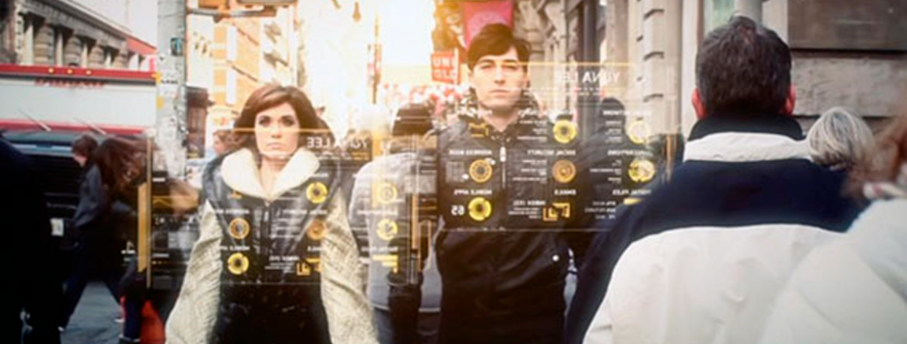
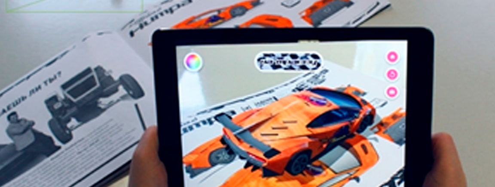
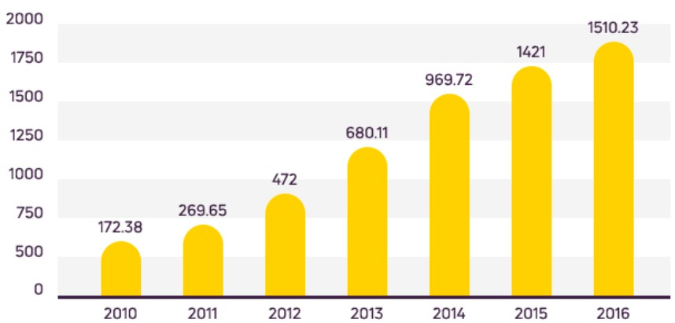
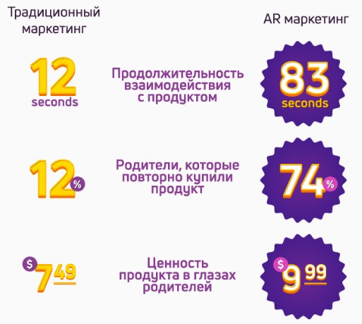
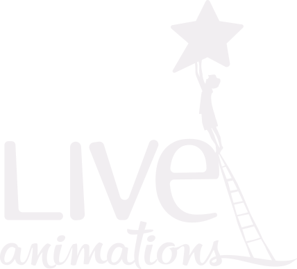

Ощутите на себе эффективность AR
Наша реальность довольно хороша и до прошлого века физический мир считался единственной реальностью, которую мы как человеческие существа могли ощущать и осознавать. Однако сегодня благодаря развитию технологий мы можем погрузиться в совершенно новые искусственные миры или же усиливать существующую реальность дополнительными информационными слоями. Эта технология называется Augmented Reality или Дополненная Реальность.
Дополненная реальность – что же это такое?
Это технология, которая позволяет размещать виртуальный текст или изображение поверх объектов из реального мира, которые человек рассматривает с помощью мобильных устройств. Виртуальный текст или изображение, которые могут быть наложены на выбранные объекты в реальном мире, как правило имеют прямое отношение к самому этому объекту

Как работают приложения AR?
Все просто как один два три
1
Используется специальная метка
2
Метка читается мобтльным устройством или компьютером
3
На экране воспроизводится слой дополнительной реальности
Развитие Технологии
Краткая история развите технологии дополненной реальности
Историю индустрии можно проследить, начиная с 50-х годов прошлого века, когда был изобретен мультисенсорный симулятор, который был назван «Сенсорама». Устройство, которое реагировало на присутствие человека во время погружения в кабинку с динамичным сиденьем, 3D изображением и стерео-звуковым окружением, могло дополнительно реагировать на изображение с сопровождением запахов и ветра.
ПодробнееМаркетинг
Маркетинг и рекламный бизнес одними из первых взяли на вооружение возможности разработки дополненной реальности. Разработка дополненной реальности в рекламе используется во всех сферах. Функциями дополненной реальности снабжаются витрины, примерочные, интерактивные киоски, промо-стенды. Рекламные кампании, проведенные с использованием технологий дополненной реальности, вызывают широкий резонанс и, что самое главное, эффективно воздействуют на целевую аудиторию, формирует устойчивое положительное впечатление от товара или услуги.

продажи смартфонов в млн. едениц
Бурное развитие и рост популярности смартфонов

Развитие безпроводных технологий передачи данных
Поэтому дополненная реальность – одна из наиболее развивающихся отраслей мобильных технологий в мире.
Дополненная реальность работает


AR даёт мощный
ВАУ-эффект!
ВАУ-эффект!
На сегодняшний день самая большая ценность в AR - хорошее маркетинговое решение и создание интересного для пользователей AR-контента.